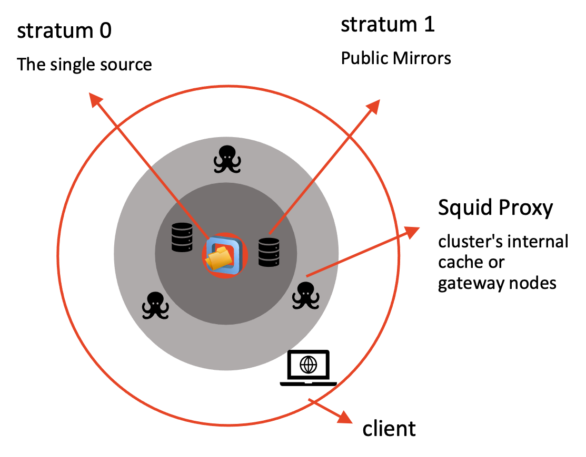

CVMFS
CVMFS mounts a shared, read-only library of scientific software/containers over HTTP. Nothing is downloaded until you touch it.
1. The mountpoint before anything is mounted
Nothing is listed. /cvmfs is managed by autofs so repositories only appear the moment something tries to access them. An empty ls /cvmfs is expected: nothing is "mounted" until it's touched.
What is autofs?
autofs is a Linux automounter — a userspace daemon, backed by the kernel's autofs module, that mounts a filesystem on demand the moment something accesses a path under a configured directory, then unmounts it again after a period of inactivity. This is why /cvmfs comes back empty: nothing gets mounted at boot, only when a path under it is actually touched.
2. Probe the client
This attempts to mount and stat every repository listed in CVMFS_REPOSITORIES (/etc/cvmfs/default.local) and reports OK/FAIL per repo. Only data.galaxyproject.org is configured right now. The singularity repo (singularity.galaxyproject.org) has deliberately been left out so we can add it back in live.
3. The configuration files
CVMFS reads config in layers. Before diving into individual files, here's the architecture those layers are configuring:

Each ring in the diagram maps to a config group below:
- Stratum 0 — the single source repository, where publishers push changes. It's not part of client config at all; everything below is about how a client reaches a read-only copy of it.
- Stratum 1 (public mirrors) — configured under domain and repo, in
CVMFS_SERVER_URL. - Squid Proxy (cluster's internal cache/gateway) — configured under config files (default + global), in
CVMFS_HTTP_PROXY. - Client (this VM, at the bottom of the diagram) — brought into the picture by system mount (autofs) and config files (
CVMFS_REPOSITORIES, cache settings).
Not covered here: servers and publishing
This demo only covers the client side — mounting and reading from repositories that already exist. Setting up Stratum 0/Stratum 1 servers and publishing content into a repository is a separate topic entirely. For that, see the CVMFS Tutorial 2021 — a bit old now, but still a solid walkthrough of the server/publishing side.
The part that trips people up: these files don't all have the same cardinality. Some are singletons, one is scoped per domain, not per repo:
| File | How many exist? | Scope |
|---|---|---|
/etc/cvmfs/default.conf |
Exactly one | Ships with the cvmfs package. Global defaults for every repo this client could ever mount. Never edited directly. |
/etc/cvmfs/default.local |
Exactly one | Site-local overrides for this client only — CVMFS_REPOSITORIES lists every repo this machine mounts, across every domain, in one place. |
/etc/cvmfs/domain.d/<domain>.conf |
One per domain, not per repo | Server list + keys directory for every repo under that domain. Our two repos, data.galaxyproject.org and singularity.galaxyproject.org, share one domain (galaxyproject.org) and the same Stratum 1 servers — so one file covers both. A repo from a genuinely different organisation's CVMFS infrastructure would need its own separate domain.d/<other-domain>.conf. |
So the count of domain.d/*.conf files tracks the number of distinct domains you mount from, not the number of repositories.
Walk through it in the same four logical groups: config files (default + global), domain and repo, security keys, and system mount.
Config files (default + global)
/etc/cvmfs/default.conf
Shipped by the cvmfs package — global defaults for all repositories (cache location/quota, timeouts, retry/backoff, key directory). Never edit this file directly; override values in default.local instead.
CVMFS_CACHE_BASE=/var/lib/cvmfs # local disk cache directory
CVMFS_QUOTA_LIMIT=4000 # cache size cap in MB
CVMFS_SHARED_CACHE=yes # one shared cache for all repos on this client, not one per repo
CVMFS_KEYS_DIR=/etc/cvmfs/keys # directory of public keys
CVMFS_TIMEOUT=5 # seconds to wait on a proxied connection before retry/failover
CVMFS_TIMEOUT_DIRECT=10 # seconds to wait on a direct (non-proxied) connection before retry/failover
CVMFS_USE_GEOAPI=no # use GeoIP to pick the nearest Stratum 1 server
Check how much of CVMFS_CACHE_BASE is actually in use. The -s flag below gives just the total instead of every subdirectory, and sudo is needed since the cache is owned by the cvmfs service, not your user:
CVMFS treats CVMFS_QUOTA_LIMIT (in MB) as a soft cap on this cache directory. Once it's exceeded, the least recently used files are evicted automatically to make room, rather than the client erroring out.
Note
CVMFS_USE_GEOAPI=no is the package default — fine generically, but not what we want for Galaxy: the galaxyproject.org domain has Stratum 1 replicas spread across the globe (TACC, IU, PSU, JRC in the EU, GVL in Australia). Without GeoAPI, the client just walks the server list in the order it's written rather than picking the closest one. default.local overrides this back to yes.
/etc/cvmfs/default.local
CVMFS_REPOSITORIES=data.galaxyproject.org
CVMFS_HTTP_PROXY='DIRECT'
CVMFS_QUOTA_LIMIT=4096
CVMFS_USE_GEOAPI=yes
Site-local overrides layered on top of default.conf — this is where which repos to mount and proxy/quota settings actually live for this machine.
Note
CVMFS_HTTP_PROXY='DIRECT' because this box is on Nectar, which has no Squid proxy set up — every client talks straight to the Stratum 1 servers. Compare with Nirin, which does have Squid proxies available and sets a proxy IP address so its hosts route through those instead of going direct.
Domain and repo
/etc/cvmfs/domain.d/galaxyproject.org.conf
CVMFS_SERVER_URL="http://cvmfs1-tacc0.galaxyproject.org/cvmfs/@fqrn@;http://cvmfs1-iu0.galaxyproject.org/cvmfs/@fqrn@;http://cvmfs1-psu0.galaxyproject.org/cvmfs/@fqrn@;http://galaxy.jrc.ec.europa.eu:8008/cvmfs/@fqrn@;http://cvmfs1-mel0.gvl.org.au/cvmfs/@fqrn@"
CVMFS_KEYS_DIR="/etc/cvmfs/keys/galaxyproject.org"
Domain-level config — anything ending in .galaxyproject.org inherits this: the Stratum 1 replica list and the key directory for signature verification. @fqrn@ is substituted per-repo, so one config line covers every *.galaxyproject.org repo.
Broken out one server per line, this is the full replica list CVMFS_SERVER_URL is packing into a single value:
CVMFS_SERVER_URL="
http://cvmfs1-tacc0.galaxyproject.org/cvmfs/@fqrn@; # 1. TACC (Texas)
http://cvmfs1-iu0.galaxyproject.org/cvmfs/@fqrn@; # 2. IU (Indiana)
http://cvmfs1-psu0.galaxyproject.org/cvmfs/@fqrn@; # 3. PSU (Pennsylvania)
http://galaxy.jrc.ec.europa.eu:8008/cvmfs/@fqrn@; # 4. Europe (JRC)
http://cvmfs1-mel0.gvl.org.au/cvmfs/@fqrn@ # 5. Australia (Melbourne)
"
Geographic spread:
- 3 in the USA — TACC, IU, PSU
- 1 in Europe — Joint Research Centre (JRC)
- 1 in Australia — GVL, Genomics Virtual Lab (Melbourne)
Why this matters
CVMFS tries these servers in order and, once GeoAPI is enabled (see the note above), picks the fastest/closest one automatically. In practice: users in the US typically land on TACC/IU/PSU, users in Europe get JRC, and users in Australia get Melbourne — all served from the same single server list.
Security keys
/etc/cvmfs/keys/galaxyproject.org/
Take a look at the keys themselves:
-----BEGIN PUBLIC KEY-----
MIIBIjANBgkqhkiG9w0BAQEFAAOCAQ8AMIIBCgKCAQEA5LHQuKWzcX5iBbCGsXGt
6CRi9+a9cKZG4UlX/lJukEJ+3dSxVDWJs88PSdLk+E25494oU56hB8YeVq+W8AQE
...
owIDAQAB
-----END PUBLIC KEY-----
-----BEGIN PUBLIC KEY-----
MIIBIjANBgkqhkiG9w0BAQEFAAOCAQ8AMIIBCgKCAQEAuJZTWTY3/dBfspFKifv8
TWuuT2Zzoo1cAskKpKu5gsUAyDFbZfYBEy91qbLPC3TuUm2zdPNsjCQbbq1Liufk
...
dQIDAQAB
-----END PUBLIC KEY-----
Two standard RSA public keys in PEM format — one per repo (data.galaxyproject.org, singularity.galaxyproject.org), used to verify the cryptographic signature on each repository's root catalog. These are the counterparts to the private keys the repo publishers hold. Both keys are already present — adding the singularity repo back in doesn't require fetching a new key, just telling CVMFS to use it.
Security: why plain HTTP is safe here
CVMFS doesn't rely on HTTPS for integrity. Every file is content-addressed by its cryptographic hash, and the repository's root catalog is digitally signed with the private key matching the .pub file shown above. If a Stratum 1 server ever served tampered or corrupted data, the client would detect the hash/signature mismatch and refuse it — regardless of the transport being plain HTTP. The mount is also strictly read-only: not even root can write to /cvmfs, so content can only change via the repository's official publishing process, never from the client side.
System mount
autofs was used in Step 1 to automatically mount file systems on-demand. Let's explore how it is configured.
/etc/auto.master.d/cvmfs.autofs
The autofs map entry that makes /cvmfs an automount point in the first place. /etc/auto.cvmfs is the CVMFS-provided automount helper — this is the piece that made ls /cvmfs come back empty in step 1: nothing is mounted until autofs is asked to resolve a path under it.
Is the filename always cvmfs.autofs?
No — cvmfs.autofs is just the name the CVMFS package happens to ship. The only hard requirement, enforced by autofs itself, is the .autofs suffix: the +dir:/etc/auto.master.d include in /etc/auto.master only picks up files ending in .autofs from that directory. If you don't see this exact filename on another system, look for whatever *.autofs file in /etc/auto.master.d/ is handling /cvmfs.
4. Add the singularity repo back in
sudo sed -i 's/CVMFS_REPOSITORIES=data.galaxyproject.org/CVMFS_REPOSITORIES=data.galaxyproject.org,singularity.galaxyproject.org/' /etc/cvmfs/default.local
Check the line was updated correctly:
If it looks right, re-probe:
We expect two repositories to be available now:
ls /cvmfs now shows both repos mounted.
How this is actually rolled out
We edited default.local by hand here for the demo, but on a real cluster you don't want to hand-edit config on every compute node. BioShell itself is built and configured with Ansible — see the cvmfs role for how CVMFS_REPOSITORIES and the rest of this config are templated out consistently across every node.
5. Explore the singularity repo
The single-character directories are a two-level alphabetical index meant to help you find tooling without listing everything at once. For example, s/a/ holds symlinks for every tool starting sa..., pointing back into all:
sabre:1.000--h577a1d6_6 -> ../../all/sabre:1.000--h577a1d6_6
sabre:1.000--h5bf99c6_2 -> ../../all/sabre:1.000--h5bf99c6_2
sabre:1.000--h7132678_3 -> ../../all/sabre:1.000--h7132678_3
It helps, but only if you already know the tool's first two letters — s/ alone has 25 subdirectories and s/a/ alone has 777 entries. In practice, all + grep is faster than walking the index by hand:
122,777 containers in one directory — every Bioconda/Biocontainers image Galaxy has ever pulled in. Too many to browse by eye, so you search for what you want:
138 versions of samtools alone. Naming convention is <tool>:<version>--<build>, matching the Bioconda/Biocontainers tag scheme — the same naming SHPC and Shelley key off of next.
Check the cache again, now that we've browsed both repos:
Bigger than the first check — every ls and cat above touched directory catalogs that CVMFS had to fetch and cache, even though we never downloaded a full container image.
Next: SHPC